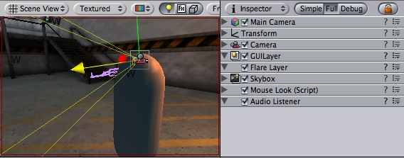

Previous
Previous
The Audio Listener acts as a microphone-like device. It receives input from any given Audio Source in the scene and plays sounds through the computer speakers. It is traditionally attached to the main Camera.

The Audio Listener, attached to the Main Camera
Properties
The Audio Listener has no properties. It simply must be added to work.
Details
The Audio Listener works in conjunction with Audio Sources, allowing you to create the aural experience of your games. When the Audio Listener is attached to an object in your scene, any Sources that are close enough to the Listener will be picked up and played through the player's computer speakers. Each scene can only have 1 Audio Listener to work properly.
As long as the Sources are in mono format, the Listener will automatically position the sound in the correct speaker, at the correct volume. Stereo Sources will automatically play in both speakers. For example, if your character walks off a street into a night club, the night club's music should probably be stereo, while the individual voices of characters in the club should be mono.
You should attach the Audio Listener to either the main camera or to the game object that represents the player. Try both to find what suits your game best.
Hints
- Each scene can only have one Audio Listener.
- You access the project-wide audio settings using the AudioManager, found in the Edit->Project Settings->Audio menu.